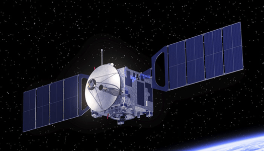
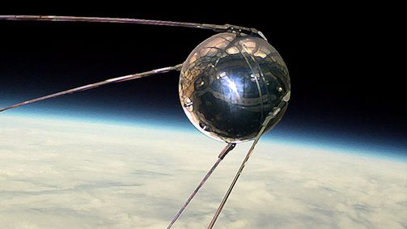
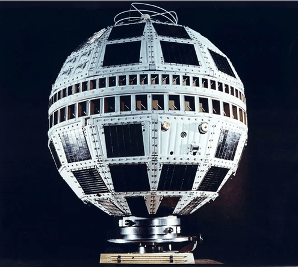

An introduction
A communications satellite is an artificial satellite that relays and amplifies radio telecommunications signals via a transponder; it creates a communication channel between a source transmitter and a receiver at different locations on Earth. Communications satellites are used for television, telephone, radio, internet, and military applications. There are over 2,000 communications satellites in Earth’s orbit, used by both private and government organizations.

An example of a communications satellite
A brief history
The first few successful missions
- Sputnik 1, 1957, Soviet Union
- Project SCORE, 1958, USA(NASA)
- Echo 1, 1960, USA(NASA)
- Syncom 1, 1963, USA(Hughes Aircraft Company)

Sputnik 1
Maiden missions from the 1970s to the 2000s
- Anik 1, 1972, Canada
- Aryabhata, 1975, India
- Arabsat-1A, 1986, Arab League
- Badr-1, 1990, Pakistan
- Turksat 1B, 1994, Turkey
An overview of the milestones in the satellite space age
On Oct. 4, 2007, the Space Age celebrated the 50th anniversary of the historic launch of Sputnik, the first artificial satellite, by the former Soviet Union.
The evolution phase
Fifty five years ago, on July 23, 1962, history was created as the millions of viewers managed to watch a press conference live due to AT&T’s satellite, Telsar 1. Satellite communication has come quite a long way since then, encompassing various innovative use cases. We have seen more change in the satellite industry in the past several years than in the first five decades after its inception.

Telstar-1
Applications of Communication Satellites
Satellite communication systems are now a major part of most telecommunications networks as well as our everyday lives through mobile personal communication systems and broadcast television. Following is a list briefly explaining a few applications-
- Telephone
- The first and historically most important application for communication satellites was in intercontinental long distance telephony.
- The fixed Public Switched Telephone Network relays telephone calls from land line telephones to an earth station, where they are then transmitted to a geostationary satellite.
- The downlink follows an analogous path.
- Television
- As television became the main market, its demand for simultaneous delivery of relatively few signals of large bandwidth to many receivers being a more precise match for the capabilities of geosynchronous comsats.
- Two satellite types are used for North American television and radio: Direct broadcast satellite (DBS), and Fixed Service Satellite (FSS).
- Radio broadcasting
- Satellite radio offers audio broadcast services in some countries, notably the United States.
- Mobile services allow listeners to roam a continent, listening to the same audio programming anywhere.
- A satellite radio or subscription radio (SR) is a digital radio signal that is broadcast by a communications satellite, which covers a much wider geographical range than terrestrial radio signals.
- Amatuer radio
- Amateur radio operators have access to amateur satellites, which have been designed specifically to carry amateur radio traffic.
- Internet access
- Military
- Communications satellites are used for military communications applications, such as Global Command and Control Systems.
-
After the 1990s, satellite communication technology has been used as a means to connect to the Internet via broadband data connections.

Direct Broadcast Satellite

Fixed Service Satellite
Recent developments in satellite communication technologies
- Availability of a new generation of cost-effective broadband interactive services to large corporations, medium sized enterprises and private homes. Refer to this document or this link for further information on this front.
- Having your own personal satellite launched into orbit might sound like an idea straight out of science fiction. But over the past few decades a unique class of satellites has been created that fits the bill: CubeSats. Refer to this link for a detailed explanation of the CubeSat technology
- SpaceX programme Starlink is a satellite constellation development project to develop a low-cost, high-performance satellite bus and requisite customer ground transceivers to implement a new space-based Internet communication system. Refer to this link for an overview of this project.
SpaceX's recent Falcon 9 mission Merlin engines
Developed by Nimish Nazirkar and Niramay Vaidya
Contact us
Nimish Nazirkar-nazirkarnp16.meta@coep.ac.in
Niramay Vaidya- vaidyanv16.it@coep.ac.in